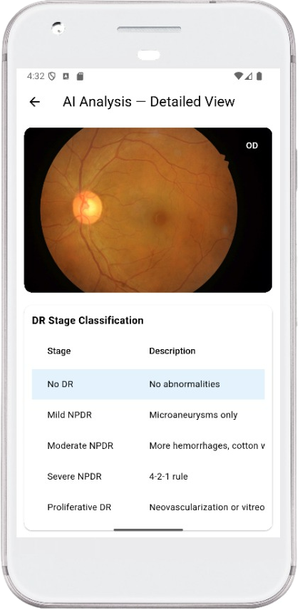

Detection of true DR cases
Exclusion of non-DR cases
Area under ROC curve
vs. conventional fundus camera
A three-stage protocol enables frontline health workers to perform retinal assessments without specialist ophthalmology equipment, dramatically lowering the barrier to access.
A low-cost clip-on lens adapter enables any standard smartphone to capture retinal images of diagnostic quality — no specialist equipment required.
Captured images are assessed using a standardized grading protocol, evaluating key biomarkers including microaneurysms, hemorrhages, and neovascularization.
Results are compared against gold-standard fundus photography, demonstrating strong agreement with an inter-rater kappa of 0.82.
The detection model demonstrated improving and increasingly stable detection performance throughout training.

This study follows rigorous prospective validation methodology, adhering to STARD (Standards for Reporting of Diagnostic Accuracy Studies) reporting guidelines.
We welcome inquiries from clinicians, researchers, and health system partners looking to implement or further validate this technology.